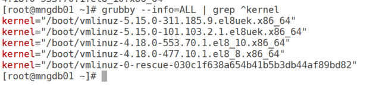
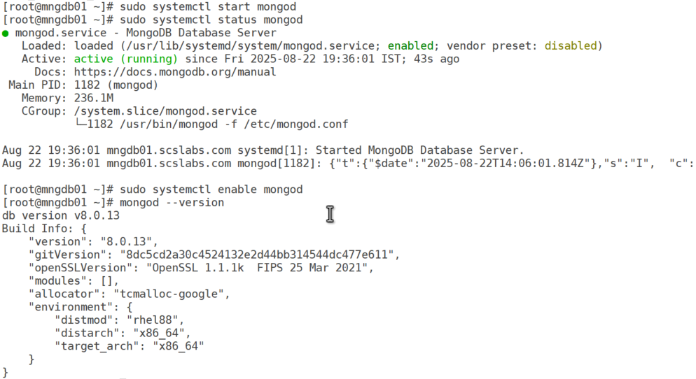
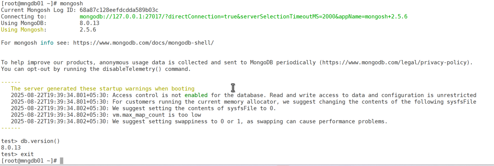
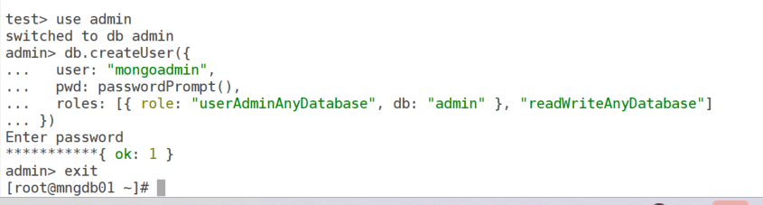
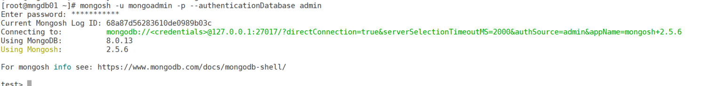

MongoDB is a powerful, open-source NoSQL database known for its flexibility and scalability. Installing it on Oracle Enterprise Linux 8 (OEL 8) needs some care, because MongoDB supports only the Red Hat Compatible Kernel (RHCK) on Oracle Linux — not the Unbreakable Enterprise Kernel (UEK). This post walks step by step through installing MongoDB Community Edition 8.0 (the latest as of August 2025) on OEL 8, configuring it, and securing it.
MongoDB requires RHCK on Oracle Linux. Check which kernel you're running and switch if needed.
uname -r| Output contains | Kernel | Action |
|---|---|---|
el8 (e.g. 4.18.0-553.70.1.el8_10.x86_64) | RHCK | You can proceed. |
el8uek | UEK | Switch to RHCK first (below). |
grubby --info=ALL | grep ^kernel
el8uek are UEK; the 4.18.0-…el8_… ones are RHCK.Identify a kernel with el8 but not uek (e.g. /boot/vmlinuz-4.18.0-553.70.1.el8_10.x86_64).
sudo grubby --set-default /boot/vmlinuz-<RHCK_kernel_version>
sudo rebootReplace <RHCK_kernel_version> with the RHCK version, then reboot. Afterwards, uname -r should show the el8 kernel.
MongoDB isn't in the default OEL 8 repositories, so add its official repository. Create the repository file:
sudo vi /etc/yum.repos.d/mongodb-org-8.0.repoAdd the following content, then save and exit:
[mongodb-org-8.0]
name=MongoDB Repository
baseurl=https://repo.mongodb.org/yum/redhat/$releasever/mongodb-org/8.0/x86_64/
gpgcheck=1
enabled=1
gpgkey=https://pgp.mongodb.com/server-8.0.ascUpdate the package list, then install MongoDB Community Edition with yum:
sudo yum update
sudo yum install -y mongodb-orgThis installs the mongodb-org meta-package: the server (mongod), the shell (mongosh) and the database tools (mongodump, mongorestore and others). Accept the GPG key if prompted.
MongoDB runs as a systemd service called mongod.
# Start the service
sudo systemctl start mongod
# Check it shows "active (running)"
sudo systemctl status mongod
# Start automatically on boot
sudo systemctl enable mongod
# Check the installed version
mongod --version
mongod is active and the installed version is v8.0.13.By default MongoDB binds to 127.0.0.1 (localhost only), stores data in /var/lib/mongo and logs to /var/log/mongodb/mongod.log. To customize, edit the configuration file:
sudo vi /etc/mongod.confExample changes:
bindIp to 0.0.0.0 for remote access (and make sure the firewall allows port 27017).dbPath or the log path for custom data and log directories.Restart MongoDB after any change:
sudo systemctl restart mongodbindIp: 0.0.0.0 to the network until you've enabled authentication in step 8 — until then, anyone who can reach port 27017 has full access.SELinux in enforcing mode can stop mongod from starting or from using custom paths. The quick fix used in this lab is to set it to permissive.
# Check the current mode
getenforce
# Set permissive until the next reboot
sudo setenforce 0
# Make it permanent: change SELINUX=enforcing to SELINUX=permissive
sudo vi /etc/selinux/configmongod to run. See the MongoDB Red Hat install guide.Connect to the MongoDB shell, check the version, and exit:
mongosh // opens the shell with a "test>" prompt
db.version() // confirms the MongoDB version
exit
By default MongoDB allows connections without authentication. Create an admin user, then turn on authorization.
mongosh
use admin
db.createUser({
user: "mongoadmin",
pwd: passwordPrompt(),
roles: [ { role: "userAdminAnyDatabase", db: "admin" }, "readWriteAnyDatabase" ]
})Enter a secure password when prompted. passwordPrompt() keeps it out of your shell history.

Edit /etc/mongod.conf:
sudo vi /etc/mongod.confAdd or uncomment the security section, then save and exit:
security:
authorization: enabledsudo systemctl restart mongod
mongosh -u mongoadmin -p --authenticationDatabase admin
mongoadmin — the connection string now includes authSource=admin.readWriteAnyDatabase and userAdminAnyDatabase cover reading, writing and user management, but not admin tasks such as dropping a database. For those, see Dropping a Database in MongoDB.sudo firewall-cmd --add-port=27017/tcp --permanent
sudo firewall-cmd --reload| Problem | What to check |
|---|---|
No package mongodb-org available | The repository file contents and the internet connection. |
mongod.service fails to start | The log at /var/log/mongodb/mongod.log, that you're booted on RHCK (uname -r), and SELinux mode. |
sudo yum erase $(rpm -qa | grep mongodb-org)
sudo rm -r /var/lib/mongo
sudo rm -r /var/log/mongodb/var/lib/mongo deletes all your databases permanently. Back up with mongodump first if you need the data.